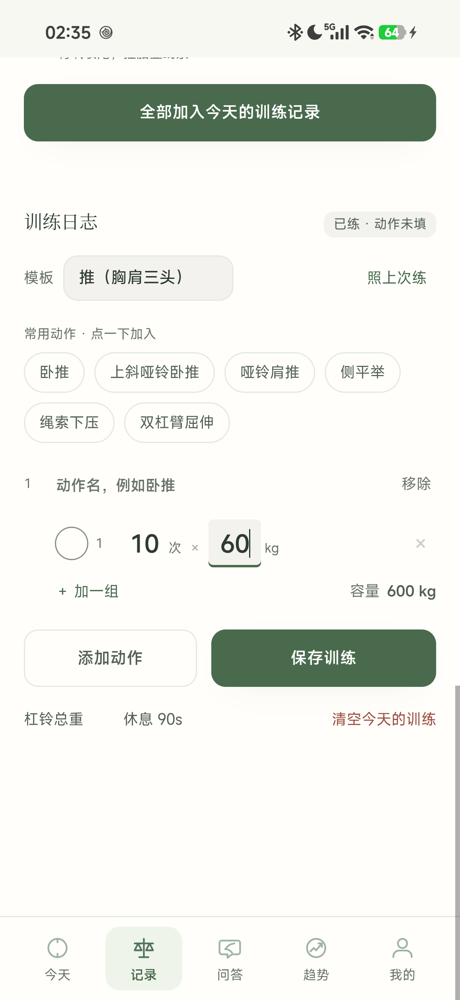
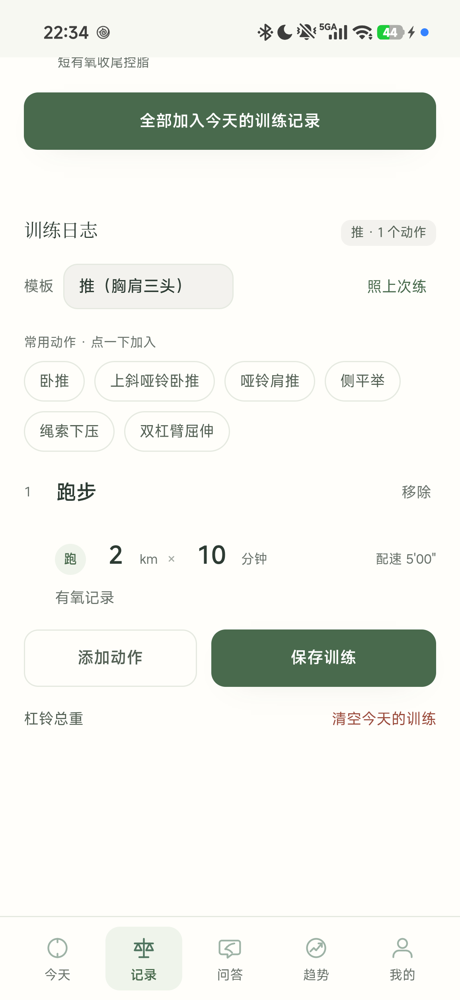
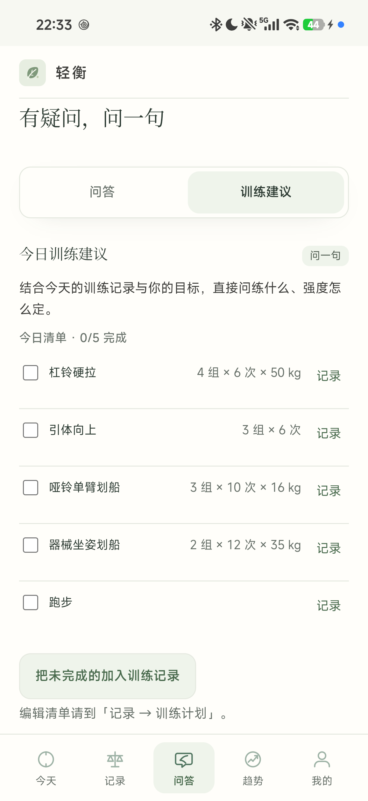
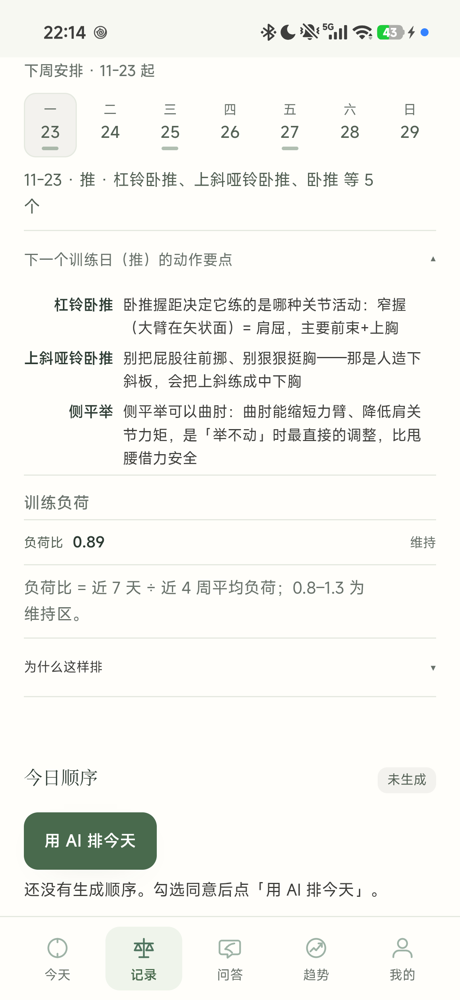
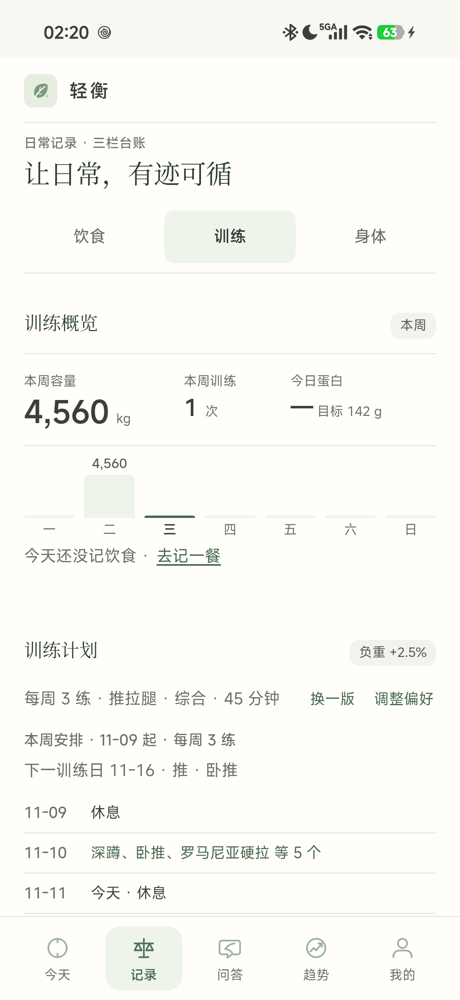
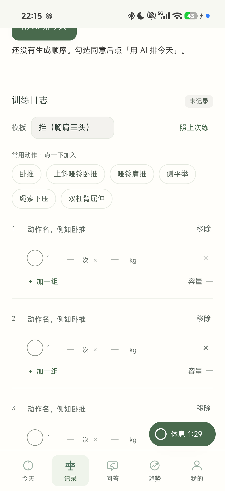
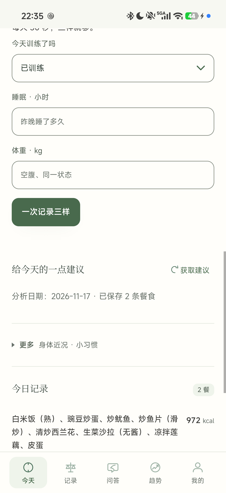

Android · 本地优先 · 无账号
每一天，
轻一点。
一本只存在你手机里的健康账。饮食、训练、身体三栏记在一处；615 KB，断网也能用，不上传任何记录。
产品亮点
每天真正会用到的四件事
训练日志：每组的数字是主角
10 次 × 60 kg 写在一条线上，单位只跟一次；容量随输入实时算，不用等到保存才看见这一组的份量。
组间休息是底栏上方的浮动药丸，点一下开始 90 秒，环形进度跟着秒数走。

有氧也记得下
跑步、骑行、椭圆按距离与时长记，配速自动算。本周概览写「1 练 · 有氧 2 km · 10 分钟」，不把有氧塞进容量里凑数。
保存后重启仍在；距离和时长都空着时，保存会提示补一项。

问答与训练建议分开
问答页分「问答 / 训练建议」：一个问吃与恢复，一个只看今天练什么。外部 AI 只在你点按钮并同意后调用，按 token 计费。
没配置 key 时，训练计划仍由本地规则生成，不会因为没网就空着。

训练计划讲得清为什么
「下一个训练日的动作要点」逐条点名动作；「为什么这样排」先列 AI 当时给的理由，再列这一周的规则依据，两块分开写。
要点跟着那天实际要做的动作走，不是模板话。

设计思路
先把表格改成一页手账
训练页重做了六轮，方向始终是同一个：先让内容有美术表达，再谈对齐。每轮只改一个决定，改完上真机看。
- v1.3.44
便签堆叠 → 一圈发丝线
三边透明加底边强调，在 480 dpi 上底边圆角悬空，每个输入框像两张叠着的便签。改成浅底加 1px 线，只留一圈边界。
- v1.3.47
动效先定档，再谈手感
140 / 220 / 320ms 三档、ease-out、位移不超过 8px；数字滚动首帧不表演，reduced-motion 全部归零。
- v1.3.58
要点与理由都可追溯
要点从「每个模板两条固定话」改成逐动作从训练库取；「为什么这样排」先读用户用 AI 排的那份清单，再列规则依据。
- v1.3.58
休息按钮进入训练视野
从卡片底部搬到固定药丸，环形进度加剩余时间；只在记组视野内或计时中出现，滚到保存按钮时不挡点击。
- v1.3.60
跑步终于能记了
数据层早就支持距离与时长，缺的只是表单。补上按行区分的有氧表单与配速，概览补有氧口径，不再只看容量。
- v1.3.60
建议回到今天
「给今天的一点建议」从「更多」移回主流程；训练建议卡迁到问答页，用分段收好，今天页只留每天要看的东西。
「美术效果优先于表格结构。」
—— 训练页重做时的取舍记录



工程
小、可解释、可回滚
| 项 | 现状 |
|---|---|
| 安装包 | 615 KB（v1.3.60） |
| 自动化测试 | 64 项：HTML 结构、CSS 令牌、行为断言 |
| 外部依赖 | 0 个 SDK；动画是自带的 motion/mini（40 KB，构建时校验 sha256） |
| 数据位置 | 本机 state.json 为权威，SQLite 只做镜像；备份由你自己导出 |
| 离线数据 | 150 条食材与示例菜、训练原则库；不联网也能查 |
| AI 调用 | 用户自己的 key；首次授权一次，之后在设置里管理，按 token 计费 |
app.js 由 14 个片段按文件名拼装生成，改片段、不手改生成物；每轮改动先在真机看，再推两个远端。
仓库
代码在 GitHub
仓库是私有的。这一页是纯静态文件，放在 site/ 下，不依赖 CDN、字体或构建步骤。
页面不加载第三方脚本、不使用 cookie；所有截图来自真机。